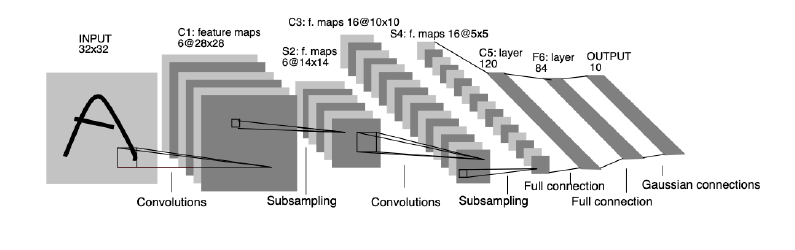

Arquitecturas Fundacionales de CNN - LeNet-5 y AlexNet#
Objetivo: Después de construir nuestra propia CNN básica, en este notebook exploraremos dos de las arquitecturas más influyentes en la historia de la visión por computador: LeNet-5 y AlexNet. Implementaremos versiones adaptadas de ambas para el dataset CIFAR-10, entenderemos sus componentes clave y compararemos su rendimiento.
1. Preparación del Entorno#
Como siempre, empezamos importando las librerías necesarias y preparando nuestros datos. Los pasos son los mismos que en el notebook anterior.
import tensorflow as tf
from tensorflow import keras
from tensorflow.keras.models import Sequential
from tensorflow.keras.layers import Dense, Flatten, Conv2D, MaxPooling2D, AveragePooling2D, Dropout
from tensorflow.keras.datasets import cifar10
import numpy as np
import matplotlib.pyplot as plt
# Cargar y preprocesar los datos
(x_train, y_train), (x_test, y_test) = cifar10.load_data()
x_train = x_train.astype('float32') / 255.0
x_test = x_test.astype('float32') / 255.0
num_classes = 10
y_train_cat = keras.utils.to_categorical(y_train, num_classes)
y_test_cat = keras.utils.to_categorical(y_test, num_classes)
print("Datos listos. Forma de x_train:", x_train.shape)
Datos listos. Forma de x_train: (50000, 32, 32, 3)
2. LeNet-5: La Pionera en Convoluciones#
Desarrollada por Yann LeCun en 1998, LeNet-5 es considerada la “abuela” de las CNNs. Fue diseñada originalmente para reconocer dígitos manuscritos del dataset MNIST (imágenes en escala de grises de 28x28).
Arquitectura Original:
C1 (Convolucional): 6 filtros de 5x5. Usa
tanhcomo activación.S2 (Subsampling/Pooling): Capa de
AveragePoolingde 2x2.C3 (Convolucional): 16 filtros de 5x5.
S4 (Subsampling/Pooling): Capa de
AveragePoolingde 2x2.C5 (Convolucional/Densa): 120 filtros de 5x5, que actúa como una capa totalmente conectada.
F6 (Densa): 84 neuronas.
Salida: 10 neuronas (para 10 dígitos).

Adaptación a CIFAR-10:
Usaremos imágenes de 32x32x3.
Reemplazaremos la activación
tanhporReLU, que es el estándar moderno.Mantendremos la estructura de capas
Conv -> Pool -> Conv -> Pool -> Dense -> Dense.
def build_lenet(input_shape=(32, 32, 3)):
model = Sequential([
# C1: Capa Convolucional
Conv2D(6, kernel_size=(5, 5), activation='relu', input_shape=input_shape, padding='same'),
# S2: Capa de Pooling
AveragePooling2D(pool_size=(2, 2)),
# C3: Capa Convolucional
Conv2D(16, kernel_size=(5, 5), activation='relu'),
# S4: Capa de Pooling
AveragePooling2D(pool_size=(2, 2)),
# Aplanar para las capas densas
Flatten(),
# F5: Capa Densa
Dense(120, activation='relu'),
# F6: Capa Densa
Dense(84, activation='relu'),
# Capa de Salida
Dense(num_classes, activation='softmax')
], name="LeNet-5_Adapted")
return model
lenet_model = build_lenet()
lenet_model.summary()
C:\Users\legion\AppData\Local\Packages\PythonSoftwareFoundation.Python.3.11_qbz5n2kfra8p0\LocalCache\local-packages\Python311\site-packages\keras\src\layers\convolutional\base_conv.py:107: UserWarning: Do not pass an `input_shape`/`input_dim` argument to a layer. When using Sequential models, prefer using an `Input(shape)` object as the first layer in the model instead.
super().__init__(activity_regularizer=activity_regularizer, **kwargs)
Model: "LeNet-5_Adapted"
┏━━━━━━━━━━━━━━━━━━━━━━━━━━━━━━━━━┳━━━━━━━━━━━━━━━━━━━━━━━━┳━━━━━━━━━━━━━━━┓ ┃ Layer (type) ┃ Output Shape ┃ Param # ┃ ┡━━━━━━━━━━━━━━━━━━━━━━━━━━━━━━━━━╇━━━━━━━━━━━━━━━━━━━━━━━━╇━━━━━━━━━━━━━━━┩ │ conv2d (Conv2D) │ (None, 32, 32, 6) │ 456 │ ├─────────────────────────────────┼────────────────────────┼───────────────┤ │ average_pooling2d │ (None, 16, 16, 6) │ 0 │ │ (AveragePooling2D) │ │ │ ├─────────────────────────────────┼────────────────────────┼───────────────┤ │ conv2d_1 (Conv2D) │ (None, 12, 12, 16) │ 2,416 │ ├─────────────────────────────────┼────────────────────────┼───────────────┤ │ average_pooling2d_1 │ (None, 6, 6, 16) │ 0 │ │ (AveragePooling2D) │ │ │ ├─────────────────────────────────┼────────────────────────┼───────────────┤ │ flatten (Flatten) │ (None, 576) │ 0 │ ├─────────────────────────────────┼────────────────────────┼───────────────┤ │ dense (Dense) │ (None, 120) │ 69,240 │ ├─────────────────────────────────┼────────────────────────┼───────────────┤ │ dense_1 (Dense) │ (None, 84) │ 10,164 │ ├─────────────────────────────────┼────────────────────────┼───────────────┤ │ dense_2 (Dense) │ (None, 10) │ 850 │ └─────────────────────────────────┴────────────────────────┴───────────────┘
Total params: 83,126 (324.71 KB)
Trainable params: 83,126 (324.71 KB)
Non-trainable params: 0 (0.00 B)
Entrenamiento y Evaluación de LeNet-5#
lenet_model.compile(optimizer='adam',
loss='categorical_crossentropy',
metrics=['accuracy'])
print("\n--- Entrenando LeNet-5 ---")
history_lenet = lenet_model.fit(x_train, y_train_cat,
epochs=25,
batch_size=64,
validation_data=(x_test, y_test_cat))
--- Entrenando LeNet-5 ---
Epoch 1/25
782/782 ━━━━━━━━━━━━━━━━━━━━ 7s 7ms/step - accuracy: 0.3182 - loss: 1.8646 - val_accuracy: 0.4887 - val_loss: 1.4001
Epoch 2/25
782/782 ━━━━━━━━━━━━━━━━━━━━ 5s 6ms/step - accuracy: 0.5153 - loss: 1.3627 - val_accuracy: 0.5373 - val_loss: 1.2964
Epoch 3/25
782/782 ━━━━━━━━━━━━━━━━━━━━ 5s 6ms/step - accuracy: 0.5697 - loss: 1.2130 - val_accuracy: 0.5691 - val_loss: 1.2271
Epoch 4/25
782/782 ━━━━━━━━━━━━━━━━━━━━ 5s 6ms/step - accuracy: 0.6076 - loss: 1.1168 - val_accuracy: 0.5866 - val_loss: 1.1505
Epoch 5/25
782/782 ━━━━━━━━━━━━━━━━━━━━ 5s 7ms/step - accuracy: 0.6233 - loss: 1.0593 - val_accuracy: 0.6181 - val_loss: 1.0819
Epoch 6/25
782/782 ━━━━━━━━━━━━━━━━━━━━ 5s 6ms/step - accuracy: 0.6462 - loss: 0.9986 - val_accuracy: 0.6124 - val_loss: 1.1039
Epoch 7/25
782/782 ━━━━━━━━━━━━━━━━━━━━ 5s 7ms/step - accuracy: 0.6598 - loss: 0.9618 - val_accuracy: 0.6299 - val_loss: 1.0692
Epoch 8/25
782/782 ━━━━━━━━━━━━━━━━━━━━ 5s 6ms/step - accuracy: 0.6828 - loss: 0.9073 - val_accuracy: 0.6259 - val_loss: 1.0646
Epoch 9/25
782/782 ━━━━━━━━━━━━━━━━━━━━ 5s 6ms/step - accuracy: 0.6853 - loss: 0.8870 - val_accuracy: 0.6412 - val_loss: 1.0402
Epoch 10/25
782/782 ━━━━━━━━━━━━━━━━━━━━ 5s 6ms/step - accuracy: 0.7014 - loss: 0.8437 - val_accuracy: 0.6302 - val_loss: 1.0711
Epoch 11/25
782/782 ━━━━━━━━━━━━━━━━━━━━ 5s 6ms/step - accuracy: 0.7115 - loss: 0.8093 - val_accuracy: 0.6246 - val_loss: 1.1034
Epoch 12/25
782/782 ━━━━━━━━━━━━━━━━━━━━ 5s 7ms/step - accuracy: 0.7220 - loss: 0.7813 - val_accuracy: 0.6408 - val_loss: 1.0350
Epoch 13/25
782/782 ━━━━━━━━━━━━━━━━━━━━ 5s 6ms/step - accuracy: 0.7378 - loss: 0.7399 - val_accuracy: 0.6531 - val_loss: 1.0293
Epoch 14/25
782/782 ━━━━━━━━━━━━━━━━━━━━ 6s 8ms/step - accuracy: 0.7425 - loss: 0.7236 - val_accuracy: 0.6443 - val_loss: 1.0682
Epoch 15/25
782/782 ━━━━━━━━━━━━━━━━━━━━ 5s 6ms/step - accuracy: 0.7560 - loss: 0.6869 - val_accuracy: 0.6524 - val_loss: 1.0588
Epoch 16/25
782/782 ━━━━━━━━━━━━━━━━━━━━ 5s 6ms/step - accuracy: 0.7670 - loss: 0.6591 - val_accuracy: 0.6450 - val_loss: 1.0956
Epoch 17/25
782/782 ━━━━━━━━━━━━━━━━━━━━ 5s 6ms/step - accuracy: 0.7700 - loss: 0.6416 - val_accuracy: 0.6440 - val_loss: 1.0966
Epoch 18/25
782/782 ━━━━━━━━━━━━━━━━━━━━ 6s 8ms/step - accuracy: 0.7780 - loss: 0.6221 - val_accuracy: 0.6425 - val_loss: 1.1071
Epoch 19/25
782/782 ━━━━━━━━━━━━━━━━━━━━ 7s 8ms/step - accuracy: 0.7875 - loss: 0.5950 - val_accuracy: 0.6401 - val_loss: 1.1548
Epoch 20/25
782/782 ━━━━━━━━━━━━━━━━━━━━ 5s 6ms/step - accuracy: 0.7964 - loss: 0.5765 - val_accuracy: 0.6417 - val_loss: 1.1654
Epoch 21/25
782/782 ━━━━━━━━━━━━━━━━━━━━ 6s 7ms/step - accuracy: 0.8042 - loss: 0.5575 - val_accuracy: 0.6350 - val_loss: 1.2174
Epoch 22/25
782/782 ━━━━━━━━━━━━━━━━━━━━ 6s 8ms/step - accuracy: 0.8105 - loss: 0.5379 - val_accuracy: 0.6361 - val_loss: 1.2117
Epoch 23/25
782/782 ━━━━━━━━━━━━━━━━━━━━ 5s 6ms/step - accuracy: 0.8156 - loss: 0.5174 - val_accuracy: 0.6423 - val_loss: 1.2199
Epoch 24/25
782/782 ━━━━━━━━━━━━━━━━━━━━ 5s 6ms/step - accuracy: 0.8206 - loss: 0.5008 - val_accuracy: 0.6397 - val_loss: 1.2129
Epoch 25/25
782/782 ━━━━━━━━━━━━━━━━━━━━ 5s 6ms/step - accuracy: 0.8291 - loss: 0.4776 - val_accuracy: 0.6321 - val_loss: 1.2834
3. AlexNet: La Revolución del Deep Learning#
AlexNet, desarrollada por Alex Krizhevsky et al. en 2012, ganó la competencia ImageNet (ILSVRC) por un margen enorme, demostrando el poder de las CNNs profundas entrenadas en GPUs. Fue un punto de inflexión para el Deep Learning.
Innovaciones Clave:
Profundidad: Era mucho más profunda que LeNet (5 capas convolucionales y 3 densas).
Activación ReLU: Usó la función de activación ReLU, que entrenaba mucho más rápido que
tanhosigmoid.Dropout: Introdujo el uso de capas de
Dropoutpara combatir el sobreajuste en las capas densas.MaxPooling: Popularizó el uso de
MaxPoolingen lugar deAveragePooling.
Adaptación a CIFAR-10: La AlexNet original tomaba imágenes de 227x227. Adaptaremos la arquitectura para nuestras imágenes de 32x32, principalmente ajustando el tamaño del primer kernel y los strides.
def build_alexnet(input_shape=(32, 32, 3)):
model = Sequential([
# 1ra Capa Convolucional (adaptada)
Conv2D(96, kernel_size=(5, 5), strides=(1,1), activation='relu', input_shape=input_shape, padding='same'),
MaxPooling2D(pool_size=(2, 2), strides=(2,2)),
# 2da Capa Convolucional
Conv2D(256, kernel_size=(5, 5), activation='relu', padding='same'),
MaxPooling2D(pool_size=(2, 2), strides=(2,2)),
# 3ra, 4ta y 5ta Capa Convolucional
Conv2D(384, kernel_size=(3, 3), activation='relu', padding='same'),
Conv2D(384, kernel_size=(3, 3), activation='relu', padding='same'),
Conv2D(256, kernel_size=(3, 3), activation='relu', padding='same'),
MaxPooling2D(pool_size=(2, 2), strides=(2,2)),
# Aplanar para las capas densas
Flatten(),
# Capas densas con Dropout
Dense(4096, activation='relu'),
Dropout(0.5),
Dense(4096, activation='relu'),
Dropout(0.5),
# Capa de Salida
Dense(num_classes, activation='softmax')
], name="AlexNet_Adapted")
return model
alexnet_model = build_alexnet()
alexnet_model.summary()
Model: "AlexNet_Adapted"
┏━━━━━━━━━━━━━━━━━━━━━━━━━━━━━━━━━┳━━━━━━━━━━━━━━━━━━━━━━━━┳━━━━━━━━━━━━━━━┓ ┃ Layer (type) ┃ Output Shape ┃ Param # ┃ ┡━━━━━━━━━━━━━━━━━━━━━━━━━━━━━━━━━╇━━━━━━━━━━━━━━━━━━━━━━━━╇━━━━━━━━━━━━━━━┩ │ conv2d_2 (Conv2D) │ (None, 32, 32, 96) │ 7,296 │ ├─────────────────────────────────┼────────────────────────┼───────────────┤ │ max_pooling2d (MaxPooling2D) │ (None, 16, 16, 96) │ 0 │ ├─────────────────────────────────┼────────────────────────┼───────────────┤ │ conv2d_3 (Conv2D) │ (None, 16, 16, 256) │ 614,656 │ ├─────────────────────────────────┼────────────────────────┼───────────────┤ │ max_pooling2d_1 (MaxPooling2D) │ (None, 8, 8, 256) │ 0 │ ├─────────────────────────────────┼────────────────────────┼───────────────┤ │ conv2d_4 (Conv2D) │ (None, 8, 8, 384) │ 885,120 │ ├─────────────────────────────────┼────────────────────────┼───────────────┤ │ conv2d_5 (Conv2D) │ (None, 8, 8, 384) │ 1,327,488 │ ├─────────────────────────────────┼────────────────────────┼───────────────┤ │ conv2d_6 (Conv2D) │ (None, 8, 8, 256) │ 884,992 │ ├─────────────────────────────────┼────────────────────────┼───────────────┤ │ max_pooling2d_2 (MaxPooling2D) │ (None, 4, 4, 256) │ 0 │ ├─────────────────────────────────┼────────────────────────┼───────────────┤ │ flatten_1 (Flatten) │ (None, 4096) │ 0 │ ├─────────────────────────────────┼────────────────────────┼───────────────┤ │ dense_3 (Dense) │ (None, 4096) │ 16,781,312 │ ├─────────────────────────────────┼────────────────────────┼───────────────┤ │ dropout (Dropout) │ (None, 4096) │ 0 │ ├─────────────────────────────────┼────────────────────────┼───────────────┤ │ dense_4 (Dense) │ (None, 4096) │ 16,781,312 │ ├─────────────────────────────────┼────────────────────────┼───────────────┤ │ dropout_1 (Dropout) │ (None, 4096) │ 0 │ ├─────────────────────────────────┼────────────────────────┼───────────────┤ │ dense_5 (Dense) │ (None, 10) │ 40,970 │ └─────────────────────────────────┴────────────────────────┴───────────────┘
Total params: 37,323,146 (142.38 MB)
Trainable params: 37,323,146 (142.38 MB)
Non-trainable params: 0 (0.00 B)
Entrenamiento y Evaluación de AlexNet#
Nota: AlexNet es una red mucho más grande y su entrenamiento tomará considerablemente más tiempo.
alexnet_model.compile(optimizer='adam',
loss='categorical_crossentropy',
metrics=['accuracy'])
print("\n--- Entrenando AlexNet ---")
history_alexnet = alexnet_model.fit(x_train, y_train_cat,
epochs=25, # AlexNet se beneficia de más épocas
batch_size=64,
validation_data=(x_test, y_test_cat))
--- Entrenando AlexNet ---
Epoch 1/25
782/782 ━━━━━━━━━━━━━━━━━━━━ 479s 609ms/step - accuracy: 0.2456 - loss: 2.0259 - val_accuracy: 0.4804 - val_loss: 1.4297
Epoch 2/25
782/782 ━━━━━━━━━━━━━━━━━━━━ 524s 671ms/step - accuracy: 0.4778 - loss: 1.4176 - val_accuracy: 0.5176 - val_loss: 1.2987
Epoch 3/25
782/782 ━━━━━━━━━━━━━━━━━━━━ 675s 863ms/step - accuracy: 0.5573 - loss: 1.2343 - val_accuracy: 0.6026 - val_loss: 1.1255
Epoch 4/25
782/782 ━━━━━━━━━━━━━━━━━━━━ 3949s 5s/step - accuracy: 0.6090 - loss: 1.0979 - val_accuracy: 0.6255 - val_loss: 1.0876
Epoch 5/25
782/782 ━━━━━━━━━━━━━━━━━━━━ 423s 541ms/step - accuracy: 0.6564 - loss: 0.9787 - val_accuracy: 0.6329 - val_loss: 1.0543
Epoch 6/25
782/782 ━━━━━━━━━━━━━━━━━━━━ 421s 539ms/step - accuracy: 0.6830 - loss: 0.8927 - val_accuracy: 0.6694 - val_loss: 0.9501
Epoch 7/25
782/782 ━━━━━━━━━━━━━━━━━━━━ 415s 531ms/step - accuracy: 0.7136 - loss: 0.8166 - val_accuracy: 0.6773 - val_loss: 0.9539
Epoch 8/25
782/782 ━━━━━━━━━━━━━━━━━━━━ 409s 522ms/step - accuracy: 0.7387 - loss: 0.7481 - val_accuracy: 0.6730 - val_loss: 0.9447
Epoch 9/25
782/782 ━━━━━━━━━━━━━━━━━━━━ 422s 539ms/step - accuracy: 0.7531 - loss: 0.7013 - val_accuracy: 0.6737 - val_loss: 0.9761
Epoch 10/25
782/782 ━━━━━━━━━━━━━━━━━━━━ 406s 519ms/step - accuracy: 0.7755 - loss: 0.6457 - val_accuracy: 0.6957 - val_loss: 0.9115
Epoch 11/25
782/782 ━━━━━━━━━━━━━━━━━━━━ 421s 538ms/step - accuracy: 0.7925 - loss: 0.6034 - val_accuracy: 0.6805 - val_loss: 0.9672
Epoch 12/25
782/782 ━━━━━━━━━━━━━━━━━━━━ 425s 543ms/step - accuracy: 0.8025 - loss: 0.5636 - val_accuracy: 0.6973 - val_loss: 0.9411
Epoch 13/25
782/782 ━━━━━━━━━━━━━━━━━━━━ 423s 541ms/step - accuracy: 0.8138 - loss: 0.5309 - val_accuracy: 0.6922 - val_loss: 0.9371
Epoch 14/25
782/782 ━━━━━━━━━━━━━━━━━━━━ 438s 560ms/step - accuracy: 0.8256 - loss: 0.5037 - val_accuracy: 0.6942 - val_loss: 0.9881
Epoch 15/25
782/782 ━━━━━━━━━━━━━━━━━━━━ 456s 583ms/step - accuracy: 0.8387 - loss: 0.4732 - val_accuracy: 0.6873 - val_loss: 1.0137
Epoch 16/25
782/782 ━━━━━━━━━━━━━━━━━━━━ 420s 537ms/step - accuracy: 0.8408 - loss: 0.4583 - val_accuracy: 0.6952 - val_loss: 0.9877
Epoch 17/25
782/782 ━━━━━━━━━━━━━━━━━━━━ 417s 534ms/step - accuracy: 0.8508 - loss: 0.4398 - val_accuracy: 0.6849 - val_loss: 1.0428
Epoch 18/25
782/782 ━━━━━━━━━━━━━━━━━━━━ 424s 543ms/step - accuracy: 0.8635 - loss: 0.4009 - val_accuracy: 0.6941 - val_loss: 0.9837
Epoch 19/25
782/782 ━━━━━━━━━━━━━━━━━━━━ 416s 532ms/step - accuracy: 0.8635 - loss: 0.3952 - val_accuracy: 0.6894 - val_loss: 1.0307
Epoch 20/25
782/782 ━━━━━━━━━━━━━━━━━━━━ 416s 533ms/step - accuracy: 0.8717 - loss: 0.3866 - val_accuracy: 0.6923 - val_loss: 0.9935
Epoch 21/25
782/782 ━━━━━━━━━━━━━━━━━━━━ 446s 570ms/step - accuracy: 0.8765 - loss: 0.3699 - val_accuracy: 0.6947 - val_loss: 1.0185
Epoch 22/25
782/782 ━━━━━━━━━━━━━━━━━━━━ 454s 581ms/step - accuracy: 0.8793 - loss: 0.3666 - val_accuracy: 0.6973 - val_loss: 1.0064
Epoch 23/25
782/782 ━━━━━━━━━━━━━━━━━━━━ 457s 584ms/step - accuracy: 0.8853 - loss: 0.3484 - val_accuracy: 0.7009 - val_loss: 1.0257
Epoch 24/25
782/782 ━━━━━━━━━━━━━━━━━━━━ 449s 574ms/step - accuracy: 0.8826 - loss: 0.3585 - val_accuracy: 0.6818 - val_loss: 1.0909
Epoch 25/25
782/782 ━━━━━━━━━━━━━━━━━━━━ 477s 610ms/step - accuracy: 0.8820 - loss: 0.3653 - val_accuracy: 0.7026 - val_loss: 1.0726
4. Comparación y Conclusiones#
Finalmente, grafiquemos las curvas de aprendizaje de ambos modelos para comparar su rendimiento.
plt.figure(figsize=(15, 6))
# Gráfico de Precisión
plt.subplot(1, 2, 1)
plt.plot(history_lenet.history['val_accuracy'], label='LeNet-5 Val Accuracy', linestyle='--')
plt.plot(history_alexnet.history['val_accuracy'], label='AlexNet Val Accuracy', linestyle='-')
plt.title('Comparación de Precisión en Validación')
plt.xlabel('Época')
plt.ylabel('Precisión')
plt.legend()
plt.grid(True)
# Gráfico de Pérdida
plt.subplot(1, 2, 2)
plt.plot(history_lenet.history['val_loss'], label='LeNet-5 Val Loss', linestyle='--')
plt.plot(history_alexnet.history['val_loss'], label='AlexNet Val Loss', linestyle='-')
plt.title('Comparación de Pérdida en Validación')
plt.xlabel('Época')
plt.ylabel('Pérdida')
plt.legend()
plt.grid(True)
plt.show()
Análisis de Resultados:
Deberíamos observar que AlexNet, a pesar de ser más lenta de entrenar, alcanza una precisión significativamente mayor que LeNet-5. Esto se debe a su mayor profundidad y capacidad para aprender características más complejas, junto con el uso de técnicas modernas como ReLU y Dropout.
Conclusión: Hemos visto la evolución de las CNNs a través de dos de sus arquitecturas más importantes. LeNet-5 sentó las bases, y AlexNet demostró que hacer las redes más profundas y grandes, junto con algunas innovaciones clave, era el camino a seguir. Esto abrió la puerta a las arquitecturas aún más profundas que dominan hoy en día (VGG, ResNet) y a tareas más complejas como la detección de objetos, que veremos a continuación.